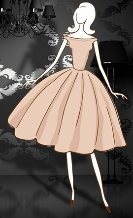
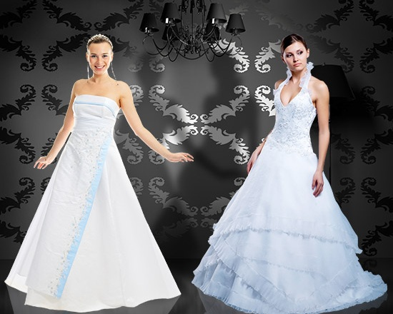
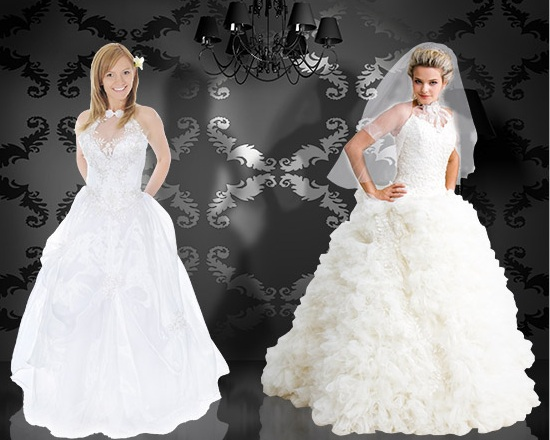
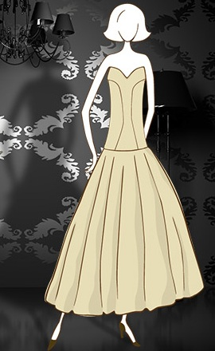
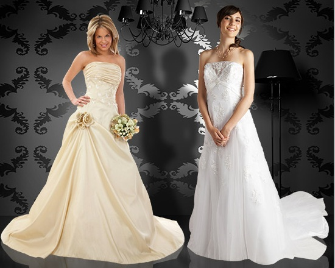
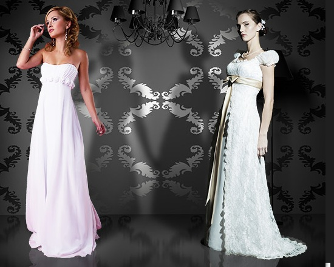
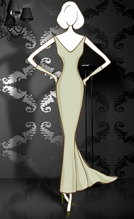
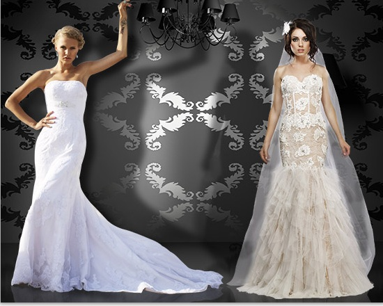

Перевернутый Треугольник
Этот тип фигуры отличают широкие плечи и узкие бедра. В отличии от «яблока» эта форма тела подразумевает наличие тонкой талии и бедер, а так же тонких рук и ног. Для такой формы подходят пышные наряды с кринолином, чтобы сбалансировать узкие бедра и широкие плечи.
- "да": Модели с широкими лямками, которые помогут покрыть ваши плечи. Глубокое декольте, как глубокий V образный вырез. Прямые свадебные платья и те, которые выделят талию, предназначены для вас. Одежды с объемной юбкой украсят ваше тело. Ищите модели принцесса, русалку, прямые и греческие.
- "нет": Наряды с тяжелой вышивкой, и оформлением на руках только добавят громоздкости. Держитесь подальше от вариантов с роскошными рукавами, так как они привлекут внимание к вашим и без того широким плечам.
Прямоугольник
Спортивное телосложение, стройное (прямоугольное при этом). Плечи-грудь-талия-бедра практически одинаковы, что делает человека с таким телосложением похожим на прямоугольник.
- "да": Наряды без бретелек с четким силуэтом и вышивкой на груди; на одно плечо, принцесса, пояс и плетения помогут привлечь внимание к фигуре и телу. Очень подойдут наряды с низкой талией. Вы также можете поискать рукава-фонарики, накидки и болеро.
- "нет": Высокий вырез. Кроме того, избегайте декольте.
Песочные часы
Выражена талия, которая пропорциональна бедрам и бюсту. Это идеально сбалансированное тело, похожее на старинные песочные часы, и им стоит хвастаться и не скрывать слоями ткани.
- "да": Благодаря вашему пропорциональные телу, вы можете носить все, что облегает - русалка, прямые, пышные, чтобы подчеркнуть ваши прелести. Подвенечное убранство со встроенным корсетом А-силуэт или прямой разрез юбки улучшит внешний вид.
- "нет": Наряды с высокой и немного заниженной талией.